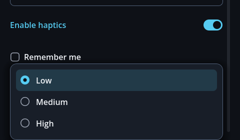

Плавающие окна
GoSurface — оболочка
Всплывающие окна, листы и выпадающие списки используют её же. Она берёт на себя безопасную область, виртуальную клавиатуру, закреплённые шапку и подвал, прокручиваемое тело, определение самого верхнего окна, восстановление фокуса, владение кнопкой «Назад» и изменение размера перетаскиванием.
| Размещение | Как выглядит | Для чего |
|---|---|---|
CENTER | Карточка посередине | Подтверждения, настройки |
BOTTOM | Лист, поднимающийся снизу | Списки, страницы управления |
ANCHOR | Карточка, закреплённая рядом с элементом управления | Выпадающие списки, контекстные меню |
close_requested — скрывать или освобождать — обязанность
владеющего экрана, потому что оболочка не может знать, почему её закрывают (сохранить и закрыть или отбросить).
GoSheet — страница снизу
var sheet := GoSheet.new()
add_child(sheet)
sheet.open("Инвентарь")
sheet.toolbar().add_child(GoStyle.line_edit("Поиск…"))
sheet.toolbar().visible = true
sheet.footer().add_child(GoStyle.button("Закрыть", sheet.close, GoStyle.Tone.PRIMARY))
sheet.footer().visible = trueОн владеет собственным CanvasLayer, поэтому надёжно лежит поверх HUD. open() очищает
тело и выключает кнопку «Назад» и закреплённые ряды — мёртвая кнопка на экране, откуда некуда возвращаться,
читается как поломка.
GoDialogs — подтверждения, которые можно await
if await dialogs.confirm("Удалить сохранение", "Это действие необратимо."):
delete_save()confirm(title, body, ok_text, cancel_text, extra, args, destructive) — всё после текста необязательно,
а alert() работает так же, но с одной кнопкой. Ставьте destructive для того, что нельзя
отменить: кнопка подтверждения становится залитой кнопкой GoStyle.Tone.DANGER_SOLID.
В светлой теме подкрашенная подпись опасного действия вынуждена темнеть, пока не станет читаться как чёрный текст;
залитая кнопка оставляет белый текст на красном. Тон применяется заново при каждом вызове, потому что окно переиспользуется,
а второй confirm() при открытом первом сразу возвращает false. confirm_key()
принимает ключи перевода.
Раскладка кнопок. action_layout по умолчанию равен VERTICAL (безопасно для длинных переводов),
HORIZONTAL даёт один ряд с половиной ширины на каждую, а AUTO ставит их в один ряд только тогда,
когда обе подписи умещаются в половину карточки одной строкой, и складывает их столбиком в остальных случаях. action_gap —
это расстояние между кнопками, а body_gap — расстояние над ними; сделайте его больше, чем зазор между кнопками,
чтобы вопрос и выбор читались как две части. Для одного-единственного диалога вызовите set_next_action_layout()
перед его открытием. Ряд собирается при первом открытии диалога, поэтому GoDialogs в автозагрузке ничего не добавляет к старту.
GoForm — форма с ограниченной шириной
GoScroll — сенсорная прокрутка
Кладите внутрь одну вещь. Шапки и ряды кнопок место снаружи — длинный список не должен выталкивать
их за экран. use_panel_edge() переносит полосу прокрутки во внутренние отступы карточки,
а содержимое сохраняет свой отступ.
Как сообщить игроку
GoNotice — снекбар
GoDialogs; когда нужен выбор — GoPromptCard.
GoPromptCard — вопрос, который не блокирует
Плавает сбоку без затемняющей подложки. Игра продолжает идти.
GoCoachMark — обучающий тур
Указывает на настоящие элементы управления, по одному за раз. Ввод берёт только карточка, поэтому нажатие на сам подсвеченный элемент двигает тур дальше — «нажмите здесь» становится действием, а не предложением.
tour.start([
{"target": bag_button, "title": "Сумка", "body": "Всё, что вы подбираете, попадает сюда."},
{"target": map_button, "title": "Карта", "body": "Нажмите, чтобы открыть карту целиком."},
])title и body могут быть ключами перевода или обычным текстом. Шаг, чья цель
исчезла, пропускается.
HUD
Вид решают мелочи
Вылизывайте крупные панели сколько угодно — глаз всё равно цепляется за мелочь: слово, разорванное надвое, обрезанное свечение, тесный слот. Четыре такие мелочи были указаны 2026-09-13 и исправлены в виджетах и темах, а не в демонстрационном экране, так что тот же результат получает каждый экран.
| Что было видно | Причина | Исправление |
|---|---|---|
У обучающей подсказки Done превращалось в Don/e |
Кнопка с включённым переносом вычитает ширину своего текста из минимума — сожмите её, и она разорвётся внутри слова | GoStyle.fit_words(): одно слово не переносится никогда; несколько слов переносятся, но самое длинное слово всегда помещается — и судят по отображаемому тексту, а не по ключу перевода, а форма применяет это заново при смене языка |
| У кнопки во всю ширину свечение обрезалось по вертикали слева | Контейнер прокрутки обрезает всё по своему краю, без исключений. Уцелел только правый край — благодаря жёлобу под полосу | GoScroll занимает у родителя отступ, чтобы отодвинуть свой край на 12dp наружу, и возвращает его внутри — содержимое остаётся на месте |
| Время, иконка и количество встали в слоте столбиком | Три ряда внутри 48dp | Крупная иконка по центру, горячая клавиша слева вверху, количество — значком справа внизу, оставшееся время — значком поверх иконки; панели значков берутся из badge_box() скина |
| Плоский выпадающий список без видимого выбора | Наведение на пункт использовало панель кнопки, а радиометки были бледными стандартными метками движка | Отдельная панель наведения (мягкая акцентная подкраска), та же графика радиокнопок, что и у флажков, высота пункта под палец |


Давайте кнопкам без подписи описание через GoStyle.icon_button(icon, action, -1, tooltip_key) —
и всплывающая подсказка для мыши, и имя для программ чтения с экрана берутся из этого одного значения.
Подсказку gohud рисует сам: стандартная подсказка движка разбивает текст по одному символу на строку,
когда её расчёт ширины идёт не так (измерено на ширине 1dp).
Карточка обучающей подсказки держится в стороне от неподвижных элементов
В альбомной ориентации карточку раньше отправляло к самому верхнему или нижнему краю — ровно туда, где живут шапки
и элементы HUD; в демо она садилась на → × в шапке. Теперь она держится на одном уровне с целью,
обходит любой GoHudAnchor, который резервирует место, и принимает прочие препятствия через
keep_clear. Она смещается на кратчайшее расстояние, которое обходит препятствие, не закрывая
цель, и остаётся на месте, когда экран слишком мал, чтобы обойти всё, — перекрытие лучше исчезновения.
Её глубина — то, за счёт чего она читается над страницей, — задаётся регуляторами скина
(float_shadow_size, float_shadow_lift, float_shadow_alpha; скины со срезанными углами используют float_glow_size).
tour.keep_clear = [header_bar, toolbar] # неподвижные элементы, которые не являются якорямиЭкраны с мышью и клавиатурой
У пальца нет состояния наведения. Разрабатывайте только под мобильные — и два состояния, существующие
лишь на настольном компьютере, останутся непроверенными; одно из них и было сломано: у gohud кольцо фокуса
было невидимо на основной кнопке. Панель была акцентного цвета, и кольцо тоже: 1.00:1, один и тот же
цвет, нарисованный поверх себя. При перемещении с клавиатуры понять, где вы находитесь, было нельзя.

Залитые кнопки (GoPrimaryButton, GoDangerSolidButton) используют кольцо,
контрастное их собственной панели: тёмное в тёмной теме, белое в светлой, тёмная прицельная скобка
в sci-fi. Проверка контраста измеряет кольцо фокуса относительно панели, на которой оно лежит, поэтому
правило переживает смену палитры (WCAG 2.4.11 требует 3:1 для индикаторов фокуса).
Виджеты HUD
GoHudAnchor — девять точек
Учитывает безопасную область и краевые отступы. Задайте ему landscape_spot — и он переедет
в альбомной ориентации: элементы управления, стоящие снизу по центру в книжной, могут уйти вправо вниз.
Как держать содержимое из-под HUD
Когда прокручиваемый экран делит дисплей с HUD, содержимое уезжает под него, и два набора текста накладываются, пока не перестают читаться оба. В этом аддоне такое случалось дважды: подсказка поля ввода выдавливалась между быстрыми слотами, а рукоятка переключателя в настройках садилась на полосу здоровья.
form.avoid_hud = true # обходить каждый видимый GoHudAnchor
joystick_anchor.reserve_space = false # …кроме тех, что появляются только под пальцемКаждый прямоугольник обходится в том направлении, где теряется меньше площади. Полоса в правом верхнем углу обходится вниз на телефоне в книжной ориентации (13% высоты) и вбок — в альбомной (21% ширины): обход по вертикали в альбомной стоил бы 27% экрана. Уже отданная площадь вычитается до того, как будет измерен следующий прямоугольник.
Элементы HUD сталкиваются и друг с другом
Девять точек делят экран; они не гарантируют, что элементы разойдутся между собой. Широкий снекбар сверху по центру садился прямо на полосу здоровья справа вверху и прятал значение — сколько осталось здоровья, прочесть было нельзя.
notice_anchor.avoid_peers = true # садится под закреплённый HUD
notice_anchor.reserve_space = false # и не двигает страницу, пока виситОн отходит только по вертикали — смещение ещё и вбок заставляло бы центрированное уведомление появляться каждый раз в новом месте. И обходит он только те элементы, которые не отходят сами: если уступают оба, эти двое будут меняться местами вечно.
GoBar — здоровье, мана, опыт
var hp := GoBar.new()
hp.label_text = "HP"
hp.ink = GoUi.color(GoTheme.DANGER_FILL) # токен только для заливки
hp.set_values(320, 500) # "320 / 500"Изменения плавно идут 0.18с — полоса здоровья, которая прыгает, не рассказывает, насколько сильно вас ударили.
reduce_motion делает их мгновенными. Большие числа сокращаются до 12.3k, чтобы
ширина полосы не дёргалась от появления и исчезновения цифр.
GoSlot — один быстрый слот
Иконка, количество, перезарядка и горячая клавиша на одной лицевой панели. Если навешивать значки на маленький круг, каждый слот получает свою ширину и ряд начинает гулять.
touch_peers.
keyboard_focus по умолчанию выключен, чтобы ряд из восьми слотов не вставал между пользователем
клавиатуры и всеми элементами настроек в порядке обхода Tab. Включайте его, когда клавиатура или геймпад — единственный ввод.
GoJoystick — виртуальный стик
| Режим | Поведение |
|---|---|
FIXED | Всегда на одном месте — легко найти, не глядя |
FOLLOW | Появляется там, куда лёг большой палец |
RELATIVE | Продолжает следовать за пальцем после появления — удобно для долгого движения |
Длина Vector2 из сигнала moved лежит в пределах 0–1, поэтому его можно сразу
умножать на скорость; от размера экрана и DPI он не зависит.
GoIconButton — выглядит маленькой, нажимается большой
touch_peers.
GoStyle — одно место, где всё создаётся
Вызовите Button.new() напрямую — и внутренние отступы, высота и перенос строк начнут слегка
расходиться от экрана к экрану. Это расхождение незаметно при разборе кода и очевидно на скриншоте.
| Группа | Функции |
|---|---|
| Структура | column row wrap_row padding spacer divider responsive_grid aspect foldable |
| Текст | label label_key line section typography |
| Кнопки | button button_key icon_button list_button list_row apply_icon style_choice_card style_chip_button style_chip_label |
| Ввод | line_edit textarea toggle checkbox slider picker select dropdown radio_group segmented choice_grid |
| Отображение | card chip hud_panel chip_panel avatar skeleton alert table tabs breadcrumb progress empty_state |
| Части поверхности | surface box floating disc face_padding |
| Вспомогательные | form fit_words natural_width tooltip_node card_body let_input_through |
box() всегда возвращает StyleBoxFlat, потому что вызывающий код получает его и
правит bg_color или corner_radius. Если нестандартная форма должна уцелеть,
используйте surface().
Строки списка с описанием
GoStyle.list_button(GoIconSet.SWORD, "Хранитель клятвы", _inspect, Color.TRANSPARENT,
"Длинный меч / Атака 42", false)Строка со второй строкой текста получает равные верхний и нижний отступы, просторнее однострочной, а пара «заголовок и описание» остаётся выровненной по вертикали рядом с иконкой — в том числе когда контейнер растягивает строку выше и когда описание переносится на несколько строк. Вся строка при этом остаётся одной целью нажатия.

medieval_light.Перетекающие ряды
Кладите элементы управления в wrap_row при их естественной ширине. Если перенос оставить включённым,
минимальная ширина кнопки падает почти до нуля, и ряд меряет свою ячейку по ней — подпись схлопывается до одного символа
на строку. Фабрика не даёт этому случиться.
Никогда не оставляйте пустой список пустым
page.add_child(GoStyle.empty_state(GoIconSet.BOX, "Здесь пока пусто"))Пустой экран люди читают как сломанный.
Хуки для наследования
Каждое место, где создаётся дочерний виджет, проходит через переопределяемый метод, поэтому проект, наследующий типы gohud, может получить свои подклассы внутри виджетов, не копируя код.
| Хук | Виджет | По умолчанию |
|---|---|---|
_make_scroll() | GoCoachMark, GoSurface | GoScroll.new() |
_make_close_button() | GoPromptCard, GoSurface | GoIconButton.new() |
_make_surface() | GoSheet, GoDialogs | GoSurface.new() |
_should_pause() | GoCoachMark | Скрывает карточку, пока открыто модальное окно |